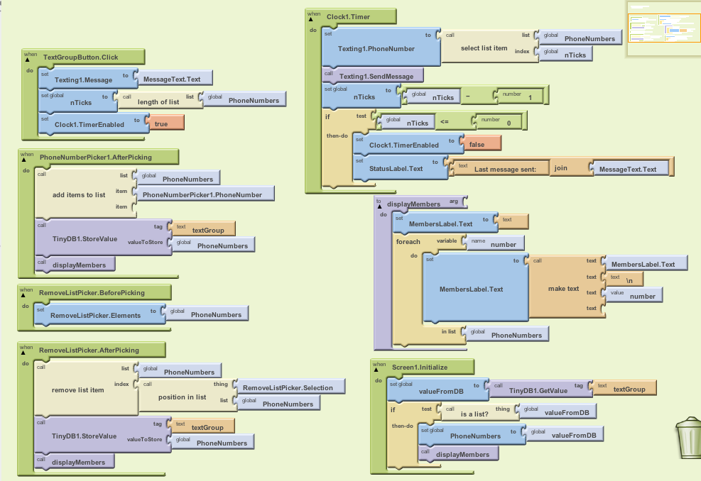

Text Group Part II: Adding and Removing Members
What you're building

This tutorial extends the Text Group tutorial. That app sent a text to a fixed list of phone numbers, and only the programmer could change the numbers in the list. The app in this tutorial allows the user to add and remove the phone numbers in the list, and it stores the list persistently in a database.
Getting started
Connect to the App Inventor web site and open your TextGroup project (if you haven't completed that tutorial, do so now before continuing). SaveAs the app and name it "TextGroup2". You can leave the screen's Title as "Text Group". Open the Blocks Editor and connect to the phone.
Introduction
You'll design the app so that the user adds phone numbers to the group by choosing from the phone's contact list, and removes them by choosing from the items already in the group.. You'll store the list of numbers in a database so that they are there even when the app is closed and re-launched.
The tutorial covers the following App Inventor components and concepts:
- The foreach block for repeating operations on a list.
- The PhoneNumberPicker component for accessing the phone's contacts.
- The ListPicker component for allowing the user to choose a number for removal.
- The Texting component for sending texts.
- The TinyDB database component for storing the phone list in a database.
Set up the Components
The user interface for Text Group, Part II has a textbox, button, and status label for sending the group text, just as in Part I. If you performed a SaveAs to begin this project, those components should already be in the view. You should then add a PhoneNumberPicker and ListPicker components for adding and removing phone numbers from the list, along with a Texting component and a TinyDB component, both of which will appear in the "non-visual" component area. A table of detailed instructions for designing the components is below, but you can also build it from the following picture of what it should look like:

The components listed below were used to create the designer window shown above. The first four were part of TextGroup so will already be there if you built that app and performed a SaveAs to begin this one. You'll need to drag each of the other components from the Palette into the Viewer and name it as specified below:
| Component Type | Palette Group | What you'll name it | Purpose of Component |
| TextBox | Basic | MessageText | User will enter message here. |
| Button | Basic | TextGroupButton | User enters the message here |
| Label | Basic | StatusLabel | Reports when texts have been sent |
| Texting | Social | Texting1 | The component that sends the texts |
| Label | Basic | GroupHeadingLabel | Header for the list of phone numbers that will appear |
| Label | Basic | MembersLabel | This is where the list of phone numbers will appear |
| Horizontal Arrangement | Screen Arrangement | HorizontalArrangement1 | To organize the add and remove buttons (pickers) horizontally |
| PhoneNumberPicker | Social | PhoneNumberPicker1 | Allow user to choose from numbers in contact list |
| ListPicker | Basic | RemoveListPicker | Allow user to remove number from phone numbers in group |
| TinyDB | Basic | TinyDB1 | For storing and retrieving group's phone numbers from database |
Set the properties of the components in the following way:
- Set the Hint of MessageText to "enter a message"
- Set the Text of TextGroupButton to "Text Group"
- Set the Text of StatusLabel to "status".
- Set the Text of GroupHeadingLabel to "-- Group -- ".
- Set the Text of MembersLabel to "members will appear here".
- Set the Text of PhoneNumberPicker1 to "Add Member".
- Set the Text of RemoverListPicker to "Remove Member"
Add behaviors to the components
If you completed Text Group, Part I, you should have the following list defined in the Blocks Editor:

For this app, you still want the list but you don't want any pre-defined numbers in it-- the numbers will be added by the end-user of the app. So remove the text blocks with the numbers and leave the make a list block empty:

You'll need to add the following behaviors:
- When the user clicks the "Add Member" button (the button associated with the PhoneNumberPicker), the picker will appear for the user to choose a number. When the choice is made, the app will add the chosen number to the PhoneNumbers list and update the database.
- When the user clicks the "Remove Member" button (the button associated with the RemovListPicker), the picker will appear for the user to choose one of the numbers already in PhoneNumbers. When the choice is made, the app will remove the number from the list and update the database.
- When the app begins, the numbers stored in the database are retrieved and loaded into PhoneNumbers.
Adding a Phone Number (Member) to the Group
The list of phone numbers in the contact list will appear when the user clicks the PhoneNumberPicker 's associated button: that behavior is built-in to the component. When the user makes a choice from the contact list, PhoneNumberPicker 's AfterPicking event is triggered-- your job is to program this to add the chosen item to the list and update the database.
You'll need the following blocks:
| Block type | Drawer | Purpose |
| PhoneNumberPicker1.AfterPicking | PhoneNumberPicker1 | The event-handler that is triggered when user chooses from contact list |
| add items to list | Lists | Your goal is to add chosen number to list |
| global PhoneNumbers | My Definitions | Plug this into list slot of add items to list |
| PhoneNumberPicker1.PhoneNumber | PhoneNumberPicker1 | This holds the chosen phone number, plug into item slot of add items to list |
| TinyDB1.StoreValue | TinyDB1 | Since the list is updated, need to update the database |
| text ("textGroup") | Text | Plug this in as the tag of TinyDB1.StoreValue |
| global PhoneNumbers | My Definitions | Plug this in as the value of TinyDB1.StoreValue |
| set MembersLabel.Text to | MembersLabel | Display the list on the phone |
| global PhoneNumbers | My Definitions | plug into set MembersLabel.Text to |
The blocks should look like this:

How the Blocks Work
When the user chooses from the PhoneListPicker, the PhoneListPicker1.AfterPicking event is triggered. A PhoneListPicker' s job is to put the user's choice in its PhoneNumber property, so the event-handler just calls add items to list to get that choice into the PhoneNumbers list.
PhoneNumbers is a variable, and variables are short-term memory that will disappear when the app is closed. Thus, after adding the item to the variable, TinyDB1.StoreValue block is used to copy that list to the database-- the phone's long-term memory. The data is tagged with "textGroup". Later, you'll use that tag to re-load the phone number list from the database each time the app is opened.
After updating the database, set MembersLabel.Text to is called to display the list. This is necessary because list variables are hidden from the user until they are placed in a visible component. Directly placing a list into a label is a rudimentary way of displaying a list-- the list will appear in the form: (111-1111 222-2222). In the next section, you'll program a more elegant list display.
Test the behavior. On the phone, click "Add Member" and choose a number from the list of contacts that appears. Does the number appear in the MembersLabel? Try adding additional numbers to see how the list is displayed.
Displaying the List with Items on Separate Lines
At this point the app shows the user the phone numbers that have been added, but not very elegantly. Create a procedure displayMembers, which displays the list with each phone number on a separate line. Be sure and call the procedure in the PhonePicker1.AfterPicking event, below the add items to list block, so that the updated list is displayed. The call to the procedure should replace the blocks that set the MembersLabel.Text directly to the list. For help displaying the list on separate lines, see Displaying a List.
You'll need the following blocks:
| Block type | Drawer | Purpose |
| procedure ("displayMembers") | Definitions | Create a procedure as you'll want to call this from multiple places |
| set MembersLabel.Text to | MembersLabel | Display the list here |
| text ("") | Text | Start the text out empty |
| foreach | Control | Iterate through the numbers |
| name number | in the foreach | Name the foreach variable "number". This is the current item of the foreach |
| global PhoneNumbers | My Definitions | Plug into in list slot of foreach |
| set MembersLabel.Text to | MembersLabel | Modify with each of the numbers |
| make text | Text | Build a text object from multiple parts |
| MembersLabel.Text | MembersLabel | Add to the label on each iteration of foreach |
| text ("\n") | Text | Newline character so that next number is on next line |
| value number | My Definitions | The current number from the list |
Here's how the blocks should look:

How the Blocks Work
The foreach in displayMembers successively adds a phone number to the end of the label, placing a newline character in between each item.
Of course this procedure will not do anything unless you call it: you should add a call to the procedure in the PhonePicker1.AfterPicking event, below the add items to list block. The call displayMembers block can be found in My Definitions, and it should replace the blocks that directly set the MembersLabel.Text in the list.
Test the behavior. On the phone, click "Add Member" to choose another number to add to the list. When the modified list is displayed, does each number appear on separate lines?
Removing a Number from the list
To allow the user to remove a number from the list, you must first get the PhoneNumbers list into the RemoveListPicker that appears when the user clicks "Remove Member". Unlike the PhonePicker component, which gets its data from the phone's contact list, ListPicker requires you to explicilty load the items that will appear. You can do this by setting the Elements property of the ListPicker component. You do this within the RemoveListPicker.BeforePicking event, which is triggered right when the user clicks the button but before the list is shown.
The blocks should look like this:

Next, code the RemoveListPicker.AfterPicking event so that the user's choice is removed from the PhoneNumbers list. You'll need the following blocks:
| Block type | Drawer | Purpose |
| RemoveListPicker.AfterPicking | RemoveListPicker | This is triggered after the user chooses a number from the list |
| remove list item | Lists | Removes the indexth item in a given list |
| global PhoneNumbers | My Definitions | Plug into list slot of remove list item |
| position in list | Lists | Given an item in a list, this gives you its index |
| RemoveListPicker.Selection | RemoveListPicker | The number chosen by the user, plug into thing slot of position in list |
| global PhoneNumbers | My Definitions | Plug into list slot of position in list |
| call displayMembers | My Definitions | Once the user removes one, display the modified list |
The blocks should look like this:

How the Blocks Work
When the user chooses a number from the RemoveListPicker, the AfterPicking event is triggered. The event-handler uses position in list to get the index of the chosen number, then uses that index to remove the number from the list PhoneNumbers. The database is then updated and the list displayed.
Test the behavior. On the phone, click "Remove Member" and choose a number from the list that appears. When the list is re-displayed, is the number you chose gone?
Loading the List from the Database
The app so far works, and when changes are made to the PhoneNumbers list they are also stored in a database. Now you just need to add the behavior such that the data stored in the database is loaded when the app launches.
Program the Screen1.Initialize event-handler so that the saved list of phone numbers is retrieved from the database and placed in the PhoneNumbers list and the display is updated to show the list. You'll need to check the retrieved data to make sure there's something there-- after all, the first time the app is used, the database will not have any numbers in it.
You'll need the following blocks:
| Block type | Drawer | Purpose |
| def variable ("valueFromDB") | Definitions | A temporary variable to hold the retrieved data |
| text (blank) | Text | Initial value for the variable can be anything |
| Screen1.Initialize | Screen1 | This is triggered when app begins |
| set valueFromDB to | My Definitions | You'll set the variable to the value retrieved from db |
| TinyDB1.GetValue | TinyDB1 | Get the stored response text from the database |
| text ("textGroup") | Text | Plug into tag slot of GetValue, make sure text is same as was used in StoreValue above |
| if test | Control | To ask if the retrieved value has some text |
| is list? | Text | Check if the data returned is a list (if no data is returned, this will be false) |
| global valueFromDB (x2) | My Definitions | This variable holds the value retrieved from GetValue |
| set PhoneNumbers to | PhoneNumbers | If we retrieved something, place it in PhoneNumbers |
The blocks should look like this:

How the Blocks Work
When the app begins, the Screen1.Initialize event is triggered. The event-handler queries the database with GetValue and the tag "textGroup". If there is a value with that tag in the database, its corresponding value will be placed in the variable valueFromDB. The event-handler checks this value-- is it a list?-- and if it is puts the list into the variable PhoneNumbers and calls displayMembers.
Test the app. To test the final app, first package and install it on the phone and run it. Live testing won't work in this case because every time you "Restart App", in clears the phone's database: even if you've stored some data persistently, it is cleared when you restart the app. Click Restart App so that the app re-initializes. Does the list of numbers you've entered appear on reload? Try removing all items and testing again. Does the app launch without error?
Text Group Part II, Final Program

Variations
Once you get the Text Group app working, you might want to explore some variations. For example,
- Write a version that records both the contact name and phone number of each member of the group. You can also use ContactPicker to let the user choose from a contact name instead of a number.
- Write a version that allows the user to define and make use of multiple groups. You'll need a group list in which each item is a list of contacts/numbers, and you'll need a more complex user interface.
Review
Here are some of the ideas covered in this tutorial:
- PhoneListPicker allow the user to choose from the phone numbers of his contacts. The choice is placed in the Selection property and the AfterPicking event is called when the user makes a choice.
- ListPicker is similar to PhoneListPicker but it displays a programmer-defined list, e.g., the list of phone numbers in the group. You define the list that will appear in the ListPicker by setting the Elements property, and you can do this in the BeforePicking event. The user's choice is placed in the Selection property, and the AfterPicking event is triggered when the user makes a choice.
- TinyDB is used to store data persistently so that it can be loaded each time an app begins. StoreValue stores with a tag to identify the data and the data itself (the value). GetValue returns the data for a given tag. Often, an app will call GetValue when the app begins (Screen1.Initialize) to load the persistent data.
- Currently, App Inventor does not provide full access and functionality for the contacts and groups of the phone. In this tutorial, you created your own group and app for processing the group (adding,removing, and texting all).
Scan the Sample App to your Phone
Scan the following barcode onto your phone to install and run the sample app.
.
Download Source Code
If you'd like to work with this sample in App Inventor, download the source code to your computer, then open App Inventor, go to the My Projects page, and choose More Actions | Upload Source.
MIT and Google are grateful to Professor David Wolber, CS Professor at The University of San Francisco, for developing this tutorial. Done with TextGroup Part 2? Return to the other tutorials here.